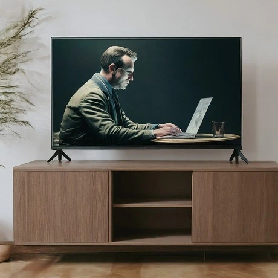

Here are some of the factors that are discouraging girls from considering IT:
Stereotypes: You know how sometimes people think computing is just for guys? That can totally turn girls away from it. Research shows girls are less likely to sign up for computing classes if they think it's a "guy thing."
